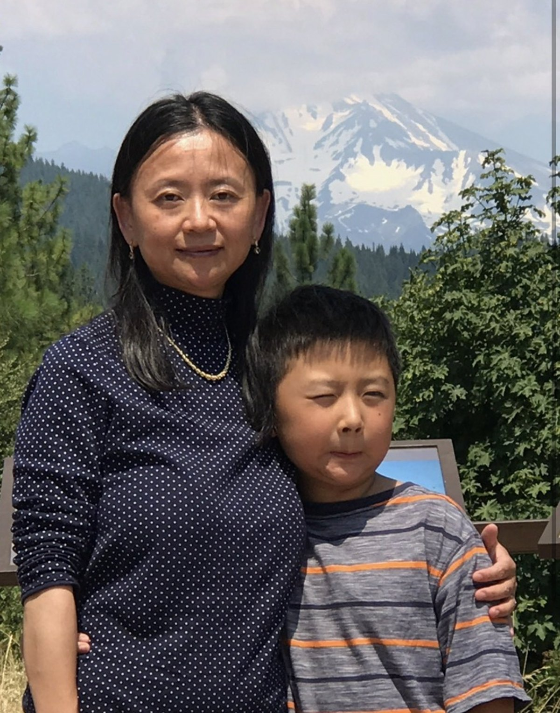

My why
My Mother Works Nights
She comes home a little after seven in the morning smelling faintly of hand sanitizer, and she will not go to bed until she has asked me at least two questions about my week, and she holds an unshakeable and entirely evidence-free confidence that both her sons are going to be fine.
She is sixty-three, she has raised us on her own the entire time, and her friends are mostly in China, which in practice means her friends are mostly a phone screen at inconvenient hours. There is a version of all this that turns her into a lesson, and I would rather not write that one, because she is a person and not a moral.

The games she missed
She missed all of them. Every football game. Every concert. The award nights, the banquets, the ones where they read your name out and you are supposed to look up into the stands and find your person. I would look up at the row where the other mothers sat, all of them together, and there would be a gap.
I was angry about that for a while. I am saying so because leaving it out would flatter me. I was twelve and I thought the gap meant something about how much I was worth.
It took me years to learn what was happening on the other side of it. That she cried about those nights. That missing them was never a scheduling problem, it was a grief she carried quietly and deliberately did not hand to us, because handing it to us would have taught us to think of ourselves as a cost. She would rather have been in that row than anywhere on earth. She went to work instead, every single time, for years.
She would rather have been there than anything. That is exactly why she was not.
She also did not have to raise us here. Silicon Valley is an absurd place to be a single nurse with two boys, where everything costs more than it should. She stayed because the schools were good. That was the entire calculation. She traded her own comfort for our classrooms and she has never once described it to me as a trade.
So here is the arithmetic
And I do mean arithmetic, because I have actually sat down and done it. Every hour I spend in a lecture hall is an hour she is standing somewhere under fluorescent light, awake at the wrong end of the clock, because that is what it costs for me to be sitting down.
People expect that to be guilt. It is not. Guilt is heavy and it makes you slow, and I have watched it make other people slow. This is closer to the pressure you feel in a starting block, the good kind, the kind that is mostly just wanting to go. I get to be here. Somebody paid for that in a currency that does not convert back, and the only sensible response I have found is to be extremely, almost comically awake.
The part I have not made peace with
None of this is past tense. She is sixty-three and she is still on nights. Both her sons are out of the house. The thing the sacrifice was for has already happened, and she is still paying for it, and when I sit with that for too long it puts real weight on my chest.
Which is, I suppose, the engine. There is no wall I would not run through for her, and I say that cheerfully, because having one non-negotiable thing makes every other decision enormously easier.
I wrote about her once
A short story about our dinner table. It won first place in the Young Adult category of the Palo Alto Weekly’s 39th Annual Short Story Contest, and the judges said something I have thought about since, which is that it caught the smells and the sounds and the essence of true motherly love in a few paragraphs. I did not know you could do that with a few paragraphs. I have been trying to do it again ever since.
It is short, and it is the best thing I have written. If you only have a minute on this site, spend it there.
The Dinner Table, Palo Alto Online, July 2025.
If you have a mother who did something like this, I would genuinely like to hear about her. fyruan@usc.edu